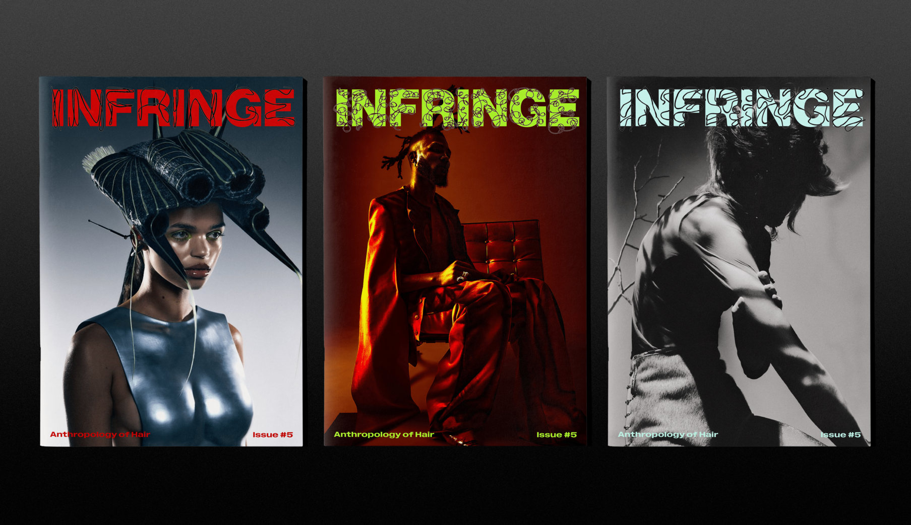
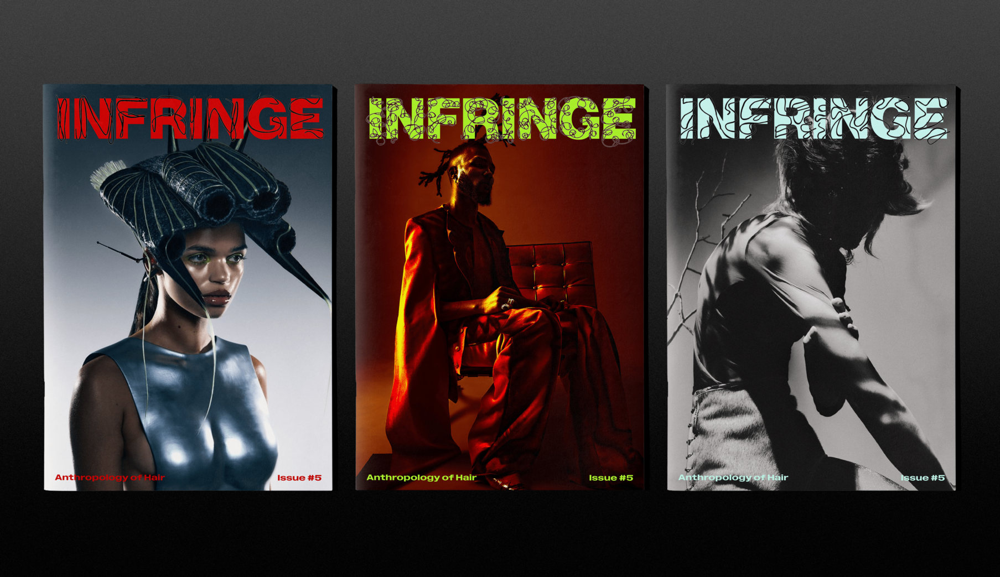

HAIR TYPES
The logo’s structure is designed around the four main hair types—coily, curly, wavy, and straight. Using geographic location, it dynamically adapts to reflect the hair type most representative of that region. The texture of the hair logo is also affected by the temperature, humidity, and windspeed of the current time.
 
